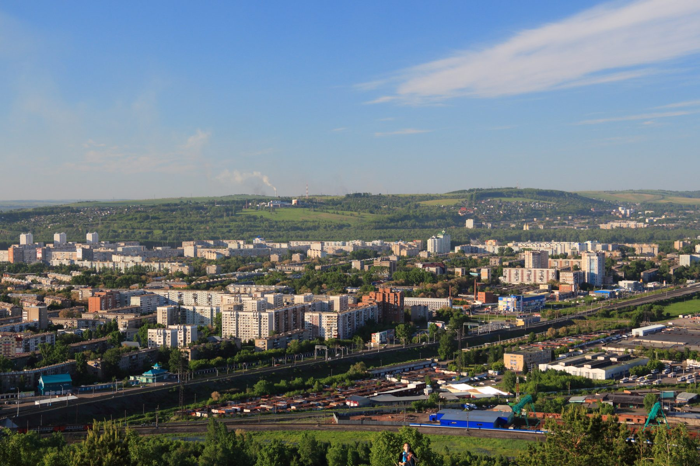

Скважины в Новокузнецке: что под участком в разных районах
Город стоит на слиянии Томи и Кондомы, и под участками в пойме, на террасе и на склоне лежат разные породы. Разбираем город по типам площадок и показываем, что это меняет для скважины.
«У соседа через квартал скважина на пятнадцати метрах, а у меня бурили втрое глубже» — жалоба, которую в Новокузнецке слышишь регулярно, и в ней нет ничего странного. Город стоит на слиянии Томи и Кондомы, и то, что лежит под участком, сильно зависит от того, где именно этот участок находится: в низкой пойме у самой реки, на надпойменной террасе, где стоит основная застройка, или на склоне, где рыхлые породы уже сменились более твёрдыми. Разбираем город по этим трём типам площадок.
Три площадки одного города

Фото: Игоревич, CC BY-SA 3.0, Викисклад. Кадрировано.Слияние двух рек определяет рельеф Новокузнецка сильнее, чем административное деление на районы. Вдоль русел Томи и Кондомы тянется пойма — самая низкая часть города. Выше неё поднимаются надпойменные террасы, на которых стоит основная часть жилой застройки, включая частный сектор. А там, где терраса заканчивается и местность начинает повышаться к окружающим город возвышенностям, рыхлые наносы утончаются, и ближе к поверхности оказываются более старые породы.
Это не абстрактная схема, а рабочий принцип, который держит вся геология региона: юг Кузбасса лежит на Кузнецком межгорном артезианском бассейне, где вода в основном движется по порам и трещинам угленосных пород, а в речных долинах поверх этой толщи лежит самостоятельный слой рыхлых речных наносов. Подробно этот региональный разрез разобран отдельно: на какую глубину бурить на юге Кузбасса. Здесь — как это устройство территории выглядит конкретно в границах Новокузнецка.
Пойма: вода близко, но с оговоркой
В пойме Томи и Кондомы бур первым делом встречает те же рыхлые аллювиальные отложения, что характерны для речных долин юга области в целом: пески, галечники, гравий, обычно мощностью несколько метров, местами больше десятка. Вода в них стоит близко к поверхности — часто буквально в первых метрах. Для скважины это означает то, что кажется удачей: неглубокий и относительно быстрый водоносный горизонт под рукой.
Оговорка в том, что близость к поверхности — это одновременно и уязвимость. Горизонт, лежащий у самой земли, слабо защищён верхними слоями и быстро принимает на себя то, что просачивается с поверхности рядом: со старой канализации, выгребных ям, автомобильной дороги. Именно поэтому для участков в пойме особенно важны требования к самому устройству скважины у поверхности — герметичный оголовок, исключающий попадание верховодки в затрубное пространство, и выдержанное расстояние до источников загрязнения. Как это устроено на самой скважине, разобрано отдельно: что входит в обустройство скважины.
Терраса: там, где стоит большая часть города
Надпойменная терраса — это уровень выше поймы, куда паводок обычно не доходит, и именно на нём стоит основная часть жилой застройки Новокузнецка, включая частный сектор в разных концах города. Здесь рыхлые речные наносы уже не так предсказуемы: их мощность может ощутимо меняться на сравнительно небольшом расстоянии, а под ними залегает основной рабочий горизонт юга области — пермские и нижнекаменноугольные угленосные толщи Кузнецкого бассейна, трещиноватая зона которых прослеживается обычно до глубины 130–150 м.
На практике это значит, что на террасе соседние участки чаще, чем в пойме, могут различаться по глубине до воды: один двор ещё попадает в остаточный слой рыхлых наносов, а другой, стоящий чуть дальше от реки, уже вскрывает трещиноватую угленосную породу на большей глубине. Дебит скважин в этой толще обычно скромнее, чем в речном аллювии, — практика региона показывает величины порядка от нескольких десятых до нескольких литров в секунду, и узнать точное значение для конкретного участка позволяет только опробование откачкой после бурения.
Для конструкции скважины это тоже не мелочь. Если участок вскрывает сразу два разных по характеру слоя — сначала рыхлые остаточные наносы, потом трещиноватую угленосную породу, — фильтровая часть и обсадная колонна подбираются иначе, чем для однородного водоносного пласта в пойме. Из чего вообще состоит скважина и за что отвечает каждый узел конструкции, разобрано отдельно: как устроена скважина на воду.
Склон и угольный фактор
Там, где терраса переходит в возвышенность — к окраинам города со стороны разрезов и отвалов, — рыхлый покров становится тоньше, а угленосная толща подходит ближе к поверхности. Для скважины это означает более раннюю встречу с рабочим горизонтом, но и более тесное соседство с объектами угледобычи, которых в Новокузнецком муниципальном округе и в его окрестностях немало.
Один из таких объектов — угольный разрез Бунгурский-Северный в районе города: он входит в перечень предприятий, по которым в отчётном году подавались данные государственного мониторинга подземных вод. Это не повод считать воду на любом склоновом участке проблемной — по общему выводу регионального доклада, влияние угледобычи на подземные воды локализуется вблизи самих разрезов и отвалов и ослабевает по мере удаления от них, а на качество вод, используемых для водоснабжения в целом по области, заметно не влияет. Но там же отмечается и обратное: в зоне непосредственного влияния разрезов минерализация подземных вод может расти до 2,7 ПДК, а жёсткость — до 4,9 ПДК по сравнению с фоновыми значениями. Для участка в паре кварталов от действующего или отработанного разреза это довод в пользу того, чтобы после бурения сделать лабораторный анализ воды, а не полагаться на «у соседей вроде нормально»: подробнее — анализ воды из скважины: когда он нужен.
Частный сектор и пригород: что на самом деле с водоснабжением
Расхожее мнение «в Новокузнецке нет центрального водопровода почти нигде» не выдерживает проверки статистикой. По данным регионального доклада о состоянии окружающей среды, централизованным водоснабжением в среднем по области обеспечено 98,7 % населения городских поселений — и Новокузнецк как крупный город из этого правила не исключение. Проблема касается не города в целом, а конкретных категорий территорий: старого частного сектора отдельных улиц, где сети не были подведены исторически, и пригородных посёлков, где подключение либо отсутствует, либо экономически нецелесообразно при текущей плотности застройки.
Отдельно стоит понимать разницу между «нет водопровода» и «водопровод есть, но без официально оформленной санитарной защиты». По тому же докладу, в Новокузнецком муниципальном округе — сельской территории, административно окружающей город, — доля водопроводов, для которых не установлены зоны санитарной охраны, в отчётном году составила 22,4 %. Это не значит, что там нет воды из крана: значит, что часть источников формально не защищена так, как того требует норматив. Для владельца частной скважины в такой местности вывод простой: там, где на общий водопровод рассчитывать не приходится или он не устраивает по качеству, собственная скважина с грамотно обустроенным оголовком и зоной вокруг неё оказывается решением надёжнее, а не хуже.
Что это значит для конкретного участка
Три площадки — не жёсткая карта с чёткими границами, а рабочий принцип, по которому стоит задавать вопросы до начала бурения. В пойме ключевой вопрос — не «докуда бурить», а «как защитить скважину сверху» от того, что рядом на поверхности. На террасе — готовность к тому, что глубина у соседей не гарантия для своего двора. На склоне ближе к разрезам — смысл сделать анализ воды после бурения, а не только замер дебита.
Точный ответ по глубине для конкретного адреса региональная статистика не даёт в принципе — она показывает диапазоны и закономерности, а не число для вашего забора. Как рассуждать о нужной глубине применительно к дому, а не к городу в целом, разобрано в статье какая глубина скважины нужна дому, а участки с заметным перепадом высот, характерные как раз для склоновой части города, отдельно разобраны здесь: бурение скважины на участке с уклоном. Окончательную картину для своего двора даёт только выезд инженера и бурение с фиксацией фактического разреза — на это и стоит рассчитывать при заказе бурения скважины на воду, а не на усреднённую цифру по району.